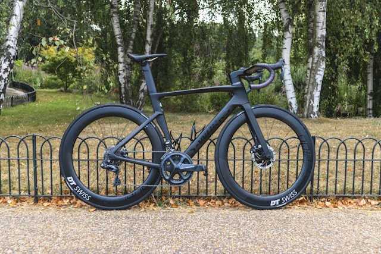

Bike fitting has become a full-blown industry in recent years, often accompanied by claims that your position must be dialled in to the millimetre. It’s worth being sceptical of that.
There are no universal reference points that justify surgical-level adjustments. Fit is highly individual and dynamic — you don’t ride in a lab, you ride on the road, shifting position constantly, especially as fatigue sets in.

The Myth of Millimetre-Perfect Fit
Watch any professional race and you’ll notice that even elite riders sit slightly asymmetrically or change position as they tire. There is no single “correct” static position. Fit exists within a window of acceptable parameters — the goal is to find something comfortable and sustainable within that range.
For beginners, an elaborate professional fitting is rarely worth the cost. Your body needs time to adapt to cycling before an optimised position can even be meaningful. The exception is time trial or triathlon setups, where extreme aero positions genuinely benefit from professional attention.
Practical Advice
- Saddle angle — flat or very slightly nose-down. Avoid strong tilt in either direction. A smartphone level app works well for this.
- Saddle height — slightly too low is better than too high. A saddle that’s too high causes hip rocking and long-term knee problems.
- Knee over pedal axle — a rough guideline, not a strict rule. Use it as a starting point and adjust based on feel.
- Sliding on the saddle — if you’re constantly sliding forward or back, adjust the fore-aft position accordingly.
- Reach — if you feel overstretched, the frame may be too large, but a shorter stem often solves it.
- Handlebar drop — a lower bar position offers aerodynamic advantages but creates a lot of additional difficulites. Even in professional cycling, the trend has moved towards less drop in recent years. Start with bars close to saddle height.
- Cleat position — set symmetrically, slightly further back than the ball of the foot rather than forward.
Comfort Takes Time
Some discomfort early on is normal — your body needs time to adapt to the position and the demands of pedalling. Indoor bikes like Wattbikes are useful here: a controlled environment to experiment with position and build technique without the variables of the road.
Small aches during adaptation are normal. Sharp pain or numbness is not — don’t ignore it.
Handling Specific Problems
- Sit bone pain — usually harmless in the early weeks. Try different shorts, give it time, or experiment with saddle shape.
- Soft tissue pain — take it seriously. If adjustments don’t help, stop and reassess before it becomes a bigger problem.
- Back or neck pain — often a sign of weak supporting muscles rather than a fit problem. Targeted strength work helps more than endless position tweaks.
- Knee pain — many possible causes. If it persists, see a physiotherapist rather than guessing.
Watch: Practical Bike Fitting Tips
Can We Help?
If you’re just starting out and want some basic setup advice, feel free to reach out. No overcomplication — just practical tips based on experience. Comfort, adaptation, and consistency matter far more than finding a perfect position from day one.